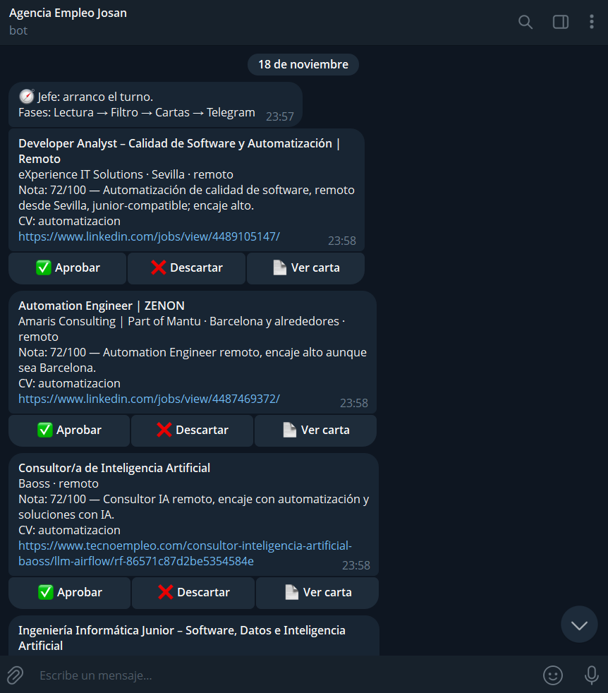
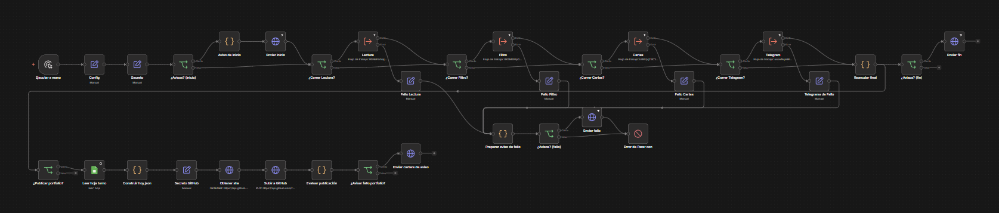

// PROYECTO DESTACADO · FUNCIONA DE VERDAD CADA NOCHE
Mi agencia de IA me busca empleo mientras trabajo
Trabajo a turnos en logística y me queda muy poco tiempo para buscar empleo en el sector. Así que construí un equipo de agentes de IA que lo hace por mí cada noche: leen las ofertas, las puntúan, me escriben la carta y me avisan al móvil. Yo solo decido. Esta torre reproduce el turno real de la última jornada.
▶ Ver la torre en vivoDatos reales del último turno, sin nombres de empresa ni datos personales. Pausa, repite y mira lo que piensa cada agente.
El equipo
Visión ex-RADAR
Explorador
Lee las alertas del correo, saca cada oferta y quita las repetidas.
No usa IANatasha ex-FILTRO
Analista
Descarta con reglas lo que no encaja y puntúa de 0 a 100 el resto.
IA barataTony Stark ex-PLUMA
Redactor
Escribe la carta a medida de las mejores ofertas.
IA de calidad · el que más gastaFuria ex-CARTERO
Mensajero
Me lo lleva todo al móvil por Telegram.
No usa IAWanda ex-BRÚJULA
Coordinadora
Arranca el turno, vigila el gasto y publica el resumen en esta web.
No usa IAJosan yo
Humano al mando
Apruebo o descarto desde el móvil. Nada se envía sin mi OK.
Última palabraCómo funciona
- Alertas, no robots. Configuré alertas de empleo en LinkedIn, InfoJobs, Joppy y Tecnoempleo que me llegan al correo. Nada de bots metiéndose en esas webs: eso te puede costar la cuenta.
- Visión lee esos correos y saca las ofertas nuevas.
- Natasha descarta lo que no encaja (inglés alto, presencial lejos, comercial…) y puntúa el resto.
- Tony Stark escribe una carta a medida para las mejores.
- Furia me lo manda todo al móvil por Telegram.
- Yo apruebo, y me quedo con el enlace, la carta y el CV listos para aplicar en un minuto.
- Wanda coordina el turno, vigila el gasto y publica el resumen aquí.
Lo que gasta cada agente
- Solo Natasha y Tony Stark usan IA: puntuar y escribir son las dos tareas que piden criterio.
- Visión, Furia y Wanda no usan IA: leer, mover y coordinar son reglas y código normal, y eso es gratis.
- Tony Stark es el que más gasta (escribir cuesta), Natasha poco (puntuar es barato), el resto cero.
- Un turno completo cuesta unos 7-8 céntimos. Al mes, un par de euros. Hay dos frenos: un tope por turno y un límite de 3 $/mes en la cuenta de IA.
Pantallazos


El vídeo
n8n y Telegram en pantalla dividida.
Por qué lo hice así
Los vídeos de «10 agentes de IA autónomos» se ven espectaculares, pero esconden dos cosas: cuestan mucho dinero y fallan a menudo. Cada agente «piensa» en bucle, llama a la IA una y otra vez y se habla con los demás; el gasto se dispara a decenas o cientos de euros al mes, de forma impredecible.
Yo lo monté con n8n, usando IA solo donde hace falta criterio y código para lo mecánico. Resultado: el mismo trabajo por céntimos, de forma fiable, y usándolo de verdad todos los días.
- Alertas, no bots. Leo los correos que los portales me mandan; no meto robots en sus webs. Así protejo mis cuentas.
- La persona decide. La IA prepara; yo apruebo. Es más seguro y más honesto.
- Escucha activa en Telegram en lugar de webhooks: mi n8n corre en Docker en mi PC y no está abierto a internet.
Y voy a ser honesto: la torre es una fachada. No es «el sistema trabajando», es una forma bonita de enseñar lo que hace. El motor de verdad es n8n. Me parece más valioso enseñar eso —y saber cuándo NO usar un agente— que fingir una película de ciencia ficción.
Privacidad
Regla de oro del proyecto: ningún dato privado mío ni de ninguna empresa se sube a ningún lado.
- El resumen que alimenta la torre lleva solo: puesto, provincia/modalidad, portal, nota y motivo. Nunca nombre de empresa, enlaces, emails, teléfonos ni datos míos.
- El código usa una lista blanca de campos, limpia los textos por si se colara algo, y hay un test automático que comprueba que no se escape nada sensible.
- Las claves (Telegram, IA, GitHub) viven dentro de n8n, nunca en un archivo ni en el código.
- La hoja con los datos completos (empresas, enlaces) es privada, solo mía.